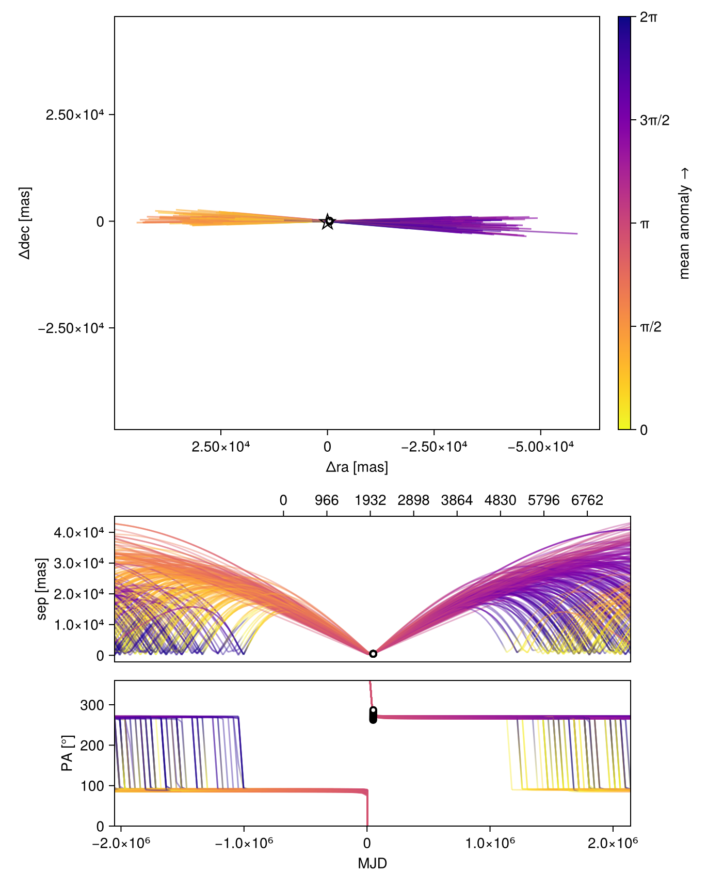
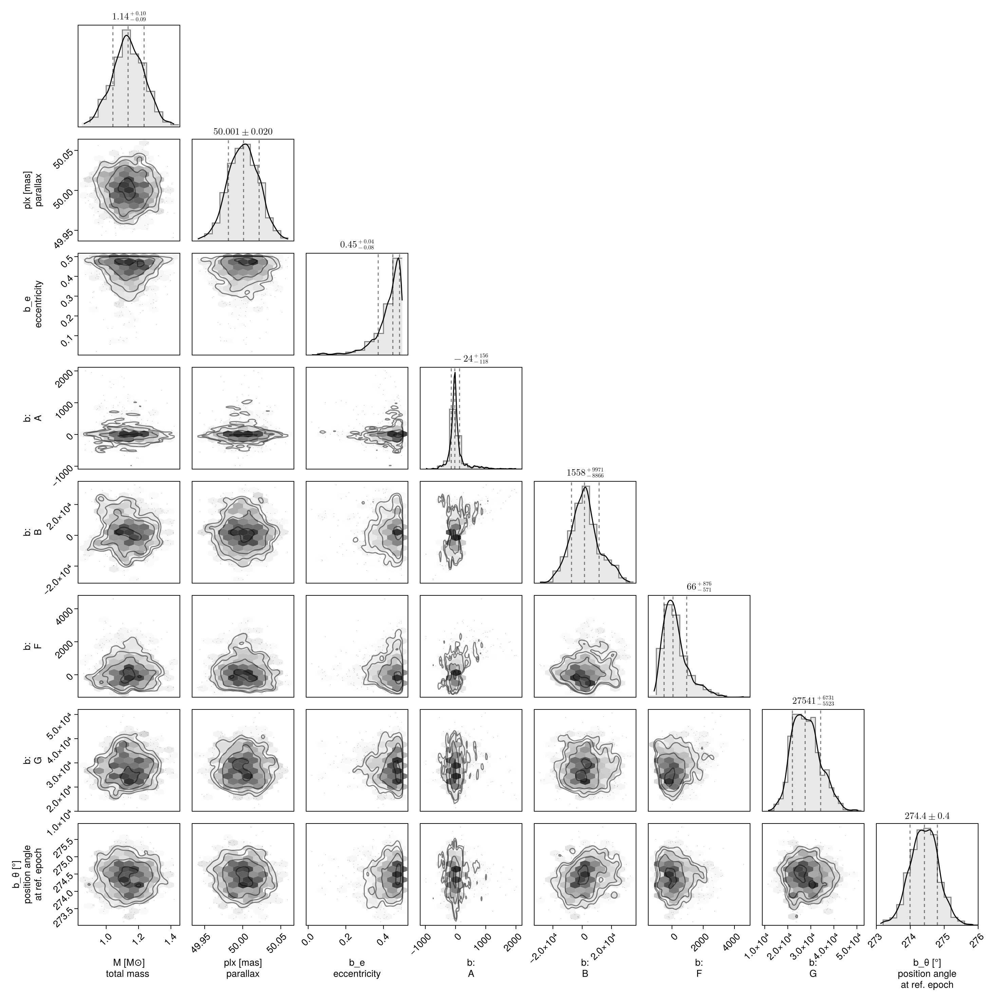
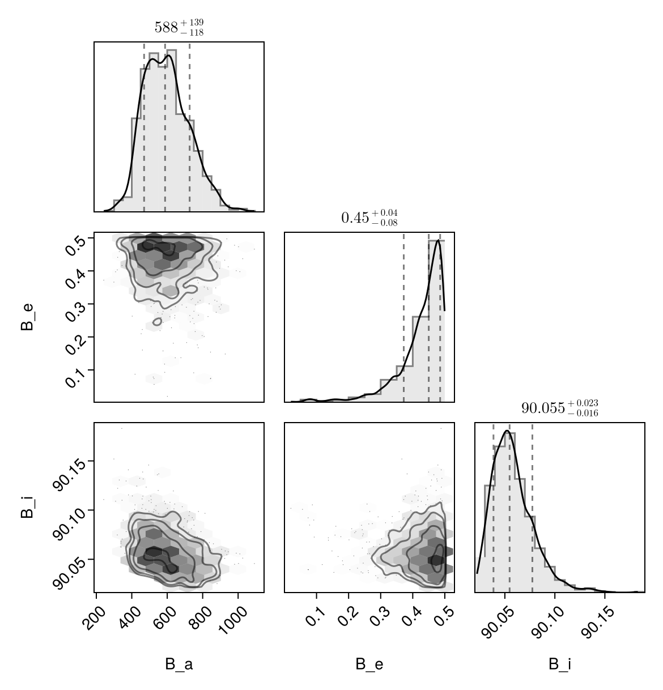

Fit with a Thiele-Innes Basis
This example shows how to fit relative astrometry using a Thiele-Innes orbital basis instead of the traditional Campbell basis used in other tutorials. The Thiele-Innes basis is more suitable then Campbell for fitting low-eccentricity orbits, because it does not have the issues where ω, Ω, and tp become degenerate as eccentricity and/or inclination fall to zero.
At the end, we will convert our results back into the Campbell basis to compare.
using Octofitter
using CairoMakie
using PairPlots
using Distributions
astrom_like = PlanetRelAstromLikelihood(
(epoch = 50000, ra = -505.7637580573554, dec = -66.92982418533026, σ_ra = 10, σ_dec = 10, cor=0),
(epoch = 50120, ra = -502.570356287689, dec = -37.47217527025044, σ_ra = 10, σ_dec = 10, cor=0),
(epoch = 50240, ra = -498.2089148883798, dec = -7.927548139010479, σ_ra = 10, σ_dec = 10, cor=0),
(epoch = 50360, ra = -492.67768482682357, dec = 21.63557115669823, σ_ra = 10, σ_dec = 10, cor=0),
(epoch = 50480, ra = -485.9770335870402, dec = 51.147204404903704, σ_ra = 10, σ_dec = 10, cor=0),
(epoch = 50600, ra = -478.1095526888573, dec = 80.53589069730698, σ_ra = 10, σ_dec = 10, cor=0),
(epoch = 50720, ra = -469.0801731788123, dec = 109.72870493064629, σ_ra = 10, σ_dec = 10, cor=0),
(epoch = 50840, ra = -458.89628893460525, dec = 138.65128697876773, σ_ra = 10, σ_dec = 10, cor=0),
)
@planet b ThieleInnesOrbit begin
e ~ Uniform(0.0, 0.5)
A ~ Normal(0, 10000) # milliarcseconds
B ~ Normal(0, 10000) # milliarcseconds
F ~ Normal(0, 10000) # milliarcseconds
G ~ Normal(0, 10000) # milliarcseconds
θ ~ UniformCircular()
tp = θ_at_epoch_to_tperi(system,b,50000.0) # reference epoch for θ. Choose an MJD date near your data.
end astrom_like
@system TutoriaPrime begin
M ~ truncated(Normal(1.2, 0.1), lower=0)
plx ~ truncated(Normal(50.0, 0.02), lower=0)
end b
model = Octofitter.LogDensityModel(TutoriaPrime)LogDensityModel for System TutoriaPrime of dimension 9 with fields .ℓπcallback and .∇ℓπcallback
We now sample from the model as usual:
using Random
Random.seed!(0)
results = octofit(model)Chains MCMC chain (1000×24×1 Array{Float64, 3}):
Iterations = 1:1:1000
Number of chains = 1
Samples per chain = 1000
Wall duration = 68.72 seconds
Compute duration = 68.72 seconds
parameters = M, plx, b_e, b_A, b_B, b_F, b_G, b_θy, b_θx, b_θ, b_tp
internals = n_steps, is_accept, acceptance_rate, hamiltonian_energy, hamiltonian_energy_error, max_hamiltonian_energy_error, tree_depth, numerical_error, step_size, nom_step_size, is_adapt, loglike, logpost, tree_depth, numerical_error
Summary Statistics
parameters mean std mcse ess_bulk ess_tail ⋯
Symbol Float64 Float64 Float64 Float64 Float64 ⋯
M 1.1365 0.1000 0.0084 143.2680 145.5171 ⋯
plx 50.0010 0.0201 0.0008 666.0665 446.8808 ⋯
b_e 0.4267 0.0734 0.0063 94.4310 105.9466 ⋯
b_A 26.2159 302.5689 34.1405 106.1456 105.8901 ⋯
b_B 2034.7601 9971.8837 1312.0935 62.7221 106.0239 ⋯
b_F 222.3722 799.1524 84.5921 100.1949 154.8136 ⋯
b_G 28074.4503 6044.6213 512.6018 144.4010 212.8946 ⋯
b_θy 0.0780 0.0105 0.0010 99.7607 222.1383 ⋯
b_θx -1.0117 0.1032 0.0103 107.9338 156.1105 ⋯
b_θ -1.4938 0.0072 0.0009 69.2446 184.3849 ⋯
b_tp -2382751.3880 912332.4452 84773.7863 117.3974 161.6820 ⋯
2 columns omitted
Quantiles
parameters 2.5% 25.0% 50.0% 75.0% ⋯
Symbol Float64 Float64 Float64 Float64 ⋯
M 0.9428 1.0686 1.1353 1.2063 ⋯
plx 49.9609 49.9868 50.0011 50.0146 ⋯
b_e 0.2224 0.4029 0.4499 0.4779 ⋯
b_A -420.5389 -91.4048 -24.3943 57.1068 ⋯
b_B -16759.3554 -4379.1159 1557.6440 7466.0723 ⋯
b_F -863.2278 -325.6345 65.8718 560.2262 ⋯
b_G 17862.2151 23523.2046 27540.7823 31770.6663 ⋯
b_θy 0.0594 0.0706 0.0777 0.0842 ⋯
b_θx -1.2367 -1.0731 -0.9984 -0.9375 ⋯
b_θ -1.5080 -1.4985 -1.4937 -1.4889 ⋯
b_tp -4731207.0211 -2841787.7272 -2219236.9485 -1744361.8169 ⋯
1 column omitted
Notice that the fit was very very fast! The Thiele-Innes orbital paramterization is easier to explore than the default Campbell in many cases.
We now display the results:
octoplot(model,results)
octocorner(model, results, small=false)
Conversion back to Campbell Elements
To convert our chain into the more familiar Campbell parameterization, we have to do a few steps. We start by turning the chain table into a an array of orbit objects, and then convert their type:
orbits_ti = Octofitter.construct_elements(results, :b, :) # colon means all rows1000-element Vector{ThieleInnesOrbit{Float64}}:
ThieleInnesOrbit{Float64}(0.46088519003674344, -4.535380328634371e6, 0.9890376192762234, 50.031195818154885, -153.70909267781914, -20301.649753264468, 148.02631049466413, 26344.04325368134, -526.5602788803504, -405.79096754926087, 6.294937884906613e6, 0.0003645602969497757, 1.6461424405440275)
ThieleInnesOrbit{Float64}(0.46169887716942015, -4.536873218555344e6, 1.0477274368759035, 50.001460747649105, -173.2300664340532, -19612.28239155866, 195.83573890408863, 28151.208984105022, -563.0210305567891, -392.24902421835543, 6.413872804585985e6, 0.0003578001146142284, 1.6478448302293058)
ThieleInnesOrbit{Float64}(0.443407604342149, -5.140825861427357e6, 1.0435951212773753, 49.997557710448575, -171.28696212613144, -19814.85348896336, 223.07021071169146, 32502.322480164512, -650.0932341360954, -396.3307770163349, 7.511336439515427e6, 0.00030552278453792656, 1.610370700185146)
ThieleInnesOrbit{Float64}(0.4460624807079241, -4.785032559968261e6, 1.0471088189649904, 50.01118362491533, -178.0069285058387, -19786.21630757499, 214.14546467201254, 30038.730494493746, -600.6552090477587, -395.651362690662, 6.885079182622893e6, 0.0003333127134389331, 1.6157089778233291)
ThieleInnesOrbit{Float64}(0.465625061704345, -4.0872732400354655e6, 1.088900832789984, 49.99546583077509, -163.27311944839468, -15262.305659861286, 258.9948842008551, 30092.821075019507, -601.9330276589862, -305.2907332858179, 6.137220861855911e6, 0.00037392892911270744, 1.6561070287419377)
ThieleInnesOrbit{Float64}(0.4744301749373214, -4.58221607975591e6, 1.1377340914868705, 49.99842942451634, -198.315240348938, -19195.40497308316, 256.58414131380556, 30181.11090919336, -603.6627021640147, -383.94019019087034, 6.552362520151077e6, 0.0003502377070170158, 1.6749308963178757)
ThieleInnesOrbit{Float64}(0.48326812592006707, -4.383961967164073e6, 1.1226912549436094, 49.97074034272026, -168.10593924192383, -18535.954789571097, 208.3863913909208, 29035.21269129779, -581.0589403144551, -370.950947826582, 6.239240338017852e6, 0.0003678147178621126, 1.6942488769037052)
ThieleInnesOrbit{Float64}(0.47610387110344116, -2.918179525016766e6, 1.1847317261445947, 49.977668402761736, -207.60392280387677, -11547.08684133184, 381.1685824218578, 25637.131100118862, -513.0280067377697, -231.08133826309376, 4.478687699445289e6, 0.0005124010823273484, 1.678556116390548)
ThieleInnesOrbit{Float64}(0.4794829548804068, -3.1569773712537214e6, 1.2274732020574841, 50.00659545152144, -109.09984806761386, -11265.823897778708, 196.6737156355173, 28257.652250539475, -565.0919050698507, -225.29660314510642, 4.946562137319799e6, 0.0004639352263035329, 1.6859221057693001)
ThieleInnesOrbit{Float64}(0.45939420259662717, -2.844600694036398e6, 1.2299676346969035, 49.98477200789997, -63.88023962075023, -11198.652179362056, 81.58018191070973, 25984.5283012814, -519.851185348881, -224.04430114665647, 4.43553035322428e6, 0.0005173867027950216, 1.6430317619246815)
⋮
ThieleInnesOrbit{Float64}(0.4345257685252663, -1.4286684419970908e6, 1.121140835759582, 49.98328113453627, -219.13770477751606, 20824.156598384554, -199.08952312761807, 23716.859646452147, -474.5121033065711, 416.64497553619225, 5.473695663918585e6, 0.00041925685414505754, 1.5927505636875876)
ThieleInnesOrbit{Float64}(0.47250134519137665, -1.3544685319680858e6, 1.0872976101018985, 50.00944519460429, -107.85723178085236, 16597.649949949973, -95.79839557911136, 23740.315642135447, -474.7200292379999, 331.8966349719773, 4.883043829648748e6, 0.0004699700647100327, 1.6707719362800502)
ThieleInnesOrbit{Float64}(0.474645922649663, -1.1333337958648643e6, 1.0790452323573232, 50.025447753906526, -196.63740938047107, 16037.883644102205, -207.8208168891052, 21110.21282158299, -422.0094801649662, 320.6180075854408, 4.290040073037797e6, 0.0005349330974843157, 1.6753973476165045)
ThieleInnesOrbit{Float64}(0.47522234192079404, -1.0731024406851188e6, 1.0497957281164272, 50.001700885625546, -117.23323754011058, 16607.171761996404, -87.526913813309, 20109.970449756238, -402.18893958455124, 332.1396888584211, 4.246614797920828e6, 0.0005404032467756528, 1.6766448218089598)
ThieleInnesOrbit{Float64}(0.47630743048828716, -936802.4977739861, 1.070847135451139, 49.98826335877729, -22.540211523728697, 17883.419240484327, 31.83997726482482, 18248.35240969174, -365.0524861560064, 357.7518211379631, 4.0785874153122874e6, 0.0005626664800627387, 1.6789980698052889)
ThieleInnesOrbit{Float64}(0.453018214197869, -1.0487579961396474e6, 1.1024764570076735, 50.01121591943147, 42.222460028001535, 14567.751181805454, 117.41823150257888, 19891.894706480383, -397.7549744806505, 291.2900497581944, 3.807856901769856e6, 0.0006026708681030811, 1.6298554791300959)
ThieleInnesOrbit{Float64}(0.47011246455251243, -1.0353848669639258e6, 1.1236099095025656, 50.02347455872413, -33.36020141801332, 13610.008112429678, 7.884878230991034, 20155.32079542722, -402.9167709314932, 272.07248912354567, 3.6936999460595925e6, 0.0006212969266900282, 1.6656487685052719)
ThieleInnesOrbit{Float64}(0.4656650161390721, -1.0501492874014808e6, 1.1155543094856422, 49.97154960758063, 211.9432574917321, 15256.381458968084, 344.2219539068656, 20147.843569605968, -403.24437782322786, 305.32981814705613, 3.9337152934263255e6, 0.0005833885407103443, 1.656191518841349)
ThieleInnesOrbit{Float64}(0.46765595237237273, -989928.2978987801, 1.1112097537869015, 49.981184366116956, 254.53154995797522, 13494.978468887968, 434.1442377623361, 19445.321316765934, -389.14902631790784, 270.04810235278205, 3.5718822202160917e6, 0.0006424860292462589, 1.6604122505261347)Here is one of those entries:
display(orbits_ti[1])We can now make a table of results (and visualize them in a corner plot) by querying properties of these objects:
table = (;
B_a = semimajoraxis.(orbits_ti),
B_e = eccentricity.(orbits_ti),
B_i = rad2deg.(inclination.(orbits_ti)),
)
pairplot(table)
We can also convert the orbit objects into Campbell parameters:
orbits_campbell = Visual{KepOrbit}.(orbits_ti)
orbits_campbell[1]KepOrbit{Float64}
─────────────────────────
a [au ] = 665.0
e = 0.46088519
i [° ] = 90.1
ω [° ] = 232.0
Ω [° ] = 89.6
tp [day] = -4.54e6
M [M⊙ ] = 0.989
period [yrs ] : 17235.0
mean motion [°/yr] : 0.0209
──────────────────────────
plx [mas] = 50.0
distance [pc ] : 20.0
──────────────────────────